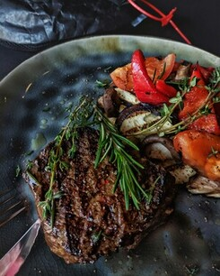
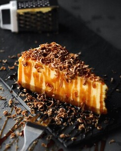

-
-
Our Story
Once upon a time in the heart of a bustling city, there was a quaint restaurant named "Dumicat". Nestled on a charming cobblestone street, it exuded an air of enchantment that drew in patrons from near and far. Dumicat had a story to tell with every dish on its carefully curated menu. The restaurant's founder, Chef Isabella, was a culinary artist who had traveled the world, collecting flavors and experiences like precious gems. She envisioned her restaurant as a canvas where each ingredient painted a tale of its origin and journey to the plate. The walls of Dumicat echoed with laughter, shared moments, and the clinking of glasses. It became a haven for romantics celebrating anniversaries, friends reuniting over exquisite meals, and solo travelers finding solace in the warm ambiance. The signature dish, "Duo de Romance," was a symphony of flavors that encapsulated the essence of Chef Isabella's culinary philosophy. It was said to have been inspired by a love story from her own past—a perfect blend of sweet and savory, just like the intertwining of two hearts. As word spread about La Petite Gourmandise, it became a destination, not just for its delectable cuisine but for the magical atmosphere that surrounded it. The restaurant hosted live jazz nights, wine tastings, and art exhibitions, turning each visit into a unique experience. In the evenings, the soft glow of fairy lights adorned the outdoor terrace, casting a warm glow on diners. The fragrance of fresh herbs and spices lingered in the air, creating an irresistible invitation to culinary bliss. And so, Dumicat became more than just a restaurant; it became a living storybook, where every patron played a role in the ongoing tale of flavors, friendships, and the timeless joy of shared meals.
Good food, Great vibes
Experience culinary bliss at 'Dumicat', where delectable dishes meet
a vibrant ambiance.


Our Specialities
-
French Toast with Maple Syrup
🕓 10 mins
-

Beef Steak with Cooked Vegetables
🕓 25 mins
-

Cheese Cake with Salted Caramel
🕓 15 mins